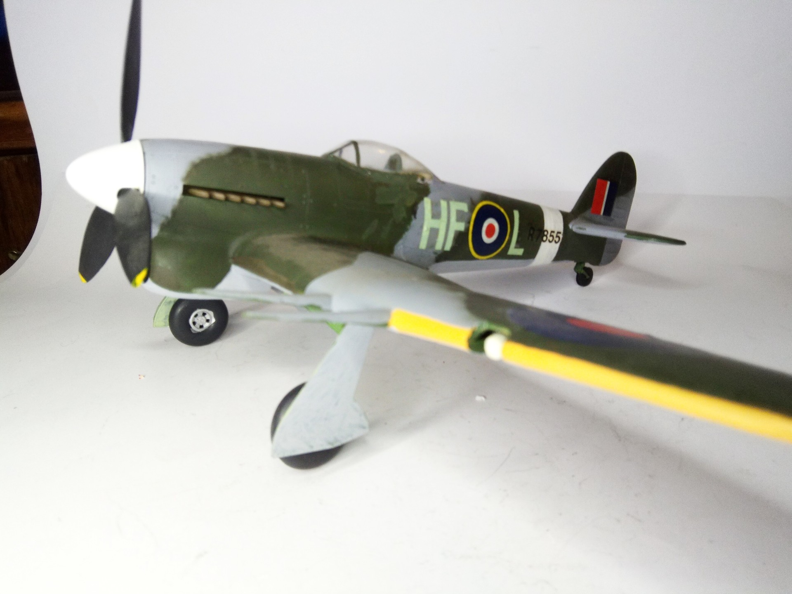
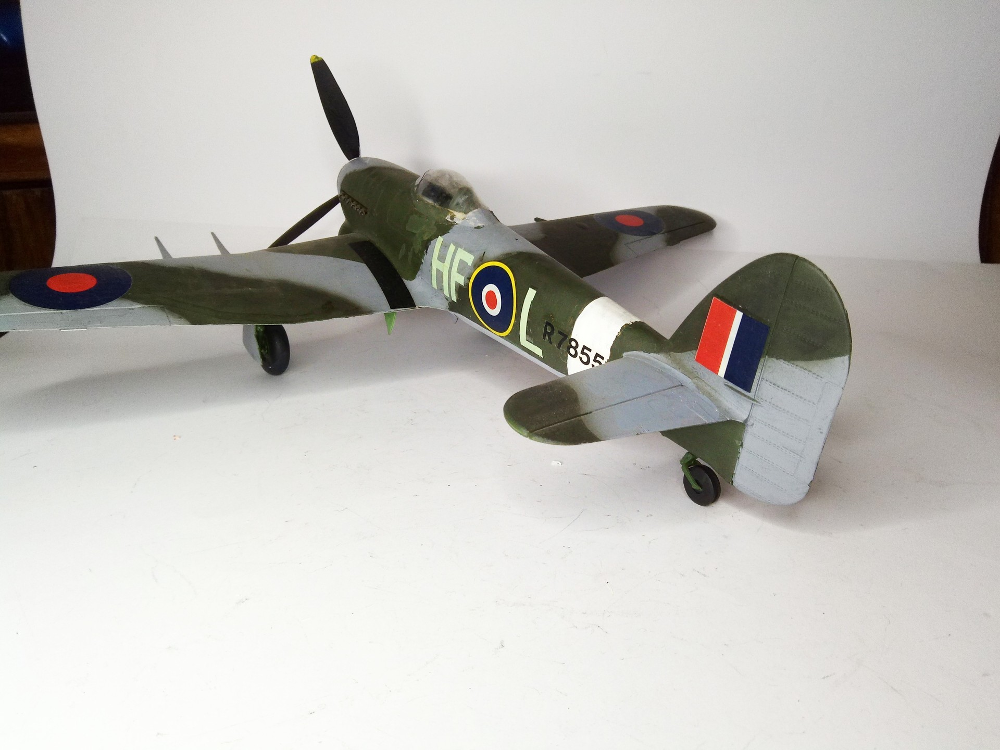

Aerei · scale model archive
Hawker Typhoon
Hawker Typhoon — Kit: conversion from Revell, Scale: 1/32. Added bubble canopy and paddle blade propeller #1/32 #conversion #Hawker #Typhoon

Photo gallery

English description
Added bubble canopy and paddle blade propeller
#1/32 #conversion #Hawker #Typhoon
Descrizione italiana
Added bubble tettuccio e paddle blade elica.